Matplotlib - Numpy images#
Download exercises zip#
Images are a direct application of matrices, and show we can nicely translate a numpy matrix cell into a pixel on the screen.
Typically, images are divided into color channels: a common scheme is the RGB model, which stands for Red Green and Blue. In this tutorial we will load an image where each pixel is made of three integer values ranging from 0 to 255 included. Each integer indicates how much of a color component is present in the pixel, with zero meaning absence and 255 bright colors.
What to do#
unzip exercises in a folder, you should get something like this:
visualization
visualization1.ipynb
visualization1-sol.ipynb
visualization3-chal.ipynb
visualization2.ipynb
visualization2-sol.ipynb
jupman.py
WARNING: to correctly visualize the notebook, it MUST be in an unzipped folder !
open Jupyter Notebook from that folder. Two things should open, first a console and then browser. The browser should show a file list: navigate the list and open the notebook
visualization-images.ipynbGo on reading that notebook, and follow instuctions inside.
Shortcut keys:
to execute Python code inside a Jupyter cell, press
Control + Enterto execute Python code inside a Jupyter cell AND select next cell, press
Shift + Enterto execute Python code inside a Jupyter cell AND a create a new cell aftwerwards, press
Alt + EnterIf the notebooks look stuck, try to select
Kernel -> Restart
Introduction#
Let’s load the image:
[ ]:
# this is *not* a python command, it is a Jupyter-specific magic command,
# to tell jupyter we want the graphs displayed in the cell outputs
%matplotlib inline
import matplotlib.image as mpimg
import matplotlib.pyplot as plt
import numpy as np
img = mpimg.imread('images/lulu.jpg')
[2]:
plt.imshow(img)
[2]:
<matplotlib.image.AxesImage at 0x7ff5875da550>

Monochrome#
For an easy start, we first get a monochromatic view of the image we call gimg:
[3]:
gimg = img[:,:,0] # this trick selects only one channel (the red one)
plt.imshow(gimg)
[3]:
<matplotlib.image.AxesImage at 0x7ff586c08fd0>
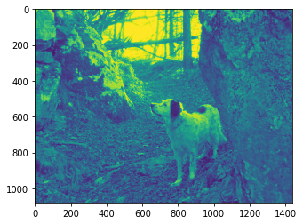
If we have taken the RED, why is it shown GREEN?? For Matplotlib, the picture is only a square matrix of integer numbers, for now it has no notion of the best color scheme we would like to see:
[4]:
print(gimg)
[[209 209 210 ... 117 118 117]
[214 214 215 ... 112 116 117]
[217 217 217 ... 105 110 114]
...
[ 36 33 30 ... 72 67 64]
[ 42 36 31 ... 70 65 61]
[ 37 31 24 ... 68 63 60]]
[5]:
type(gimg)
[5]:
numpy.ndarray
By default matplotlib shows the intensity of light using with a greenish colormap.
Luckily, many color maps are available, for example the 'hot' one:
[6]:
plt.imshow(gimg, cmap='hot')
[6]:
<matplotlib.image.AxesImage at 0x7ff586ba6d50>
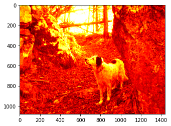
To avoid confusion, we will pick a proper gray colormap:
[7]:
plt.imshow(gimg, cmap='gray')
[7]:
<matplotlib.image.AxesImage at 0x7ff586b2ea50>

Let’s define this shorthand function to type a little less:
[8]:
def gs(some_img):
# vmin and vmax prevent normalization that occurs only with monochromatic images
plt.imshow(some_img, cmap='gray', vmin=0, vmax=255)
[9]:
gs(gimg)
Focus#
Let’s try some simple transformation. As with regular Python lists, we can do slicing:
[10]:
gs(gimg[350:1050,500:1200])
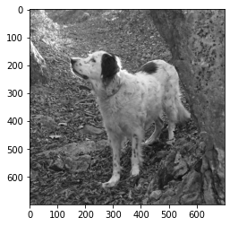
NOTE 1: differently from regular lists of lists, in Numpy we can write slices for different dimensions within the same square brackets
NOTE 2: We are still talking about matrices, so pictures also follow the very same conventions of regular algebra we’ve also seen with lists of lists: the first index is for rows and starts from 0 in the left upper corner, and second index is for columns.
NOTE 3: the indeces shown on the extracted picture are not the indeces of the original matrix!
Exercise - Head focus#
Try selecting the head:
[ ]:
# write here
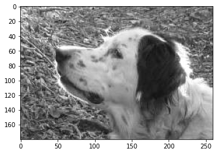
Show solution
[ ]:
gs(gimg[470:650,600:860])
hstack and vstack#
We can stitch together pictures with hstack and vstack. Note they produce a NEW matrix:
[12]:
gs(np.hstack((gimg, gimg)))
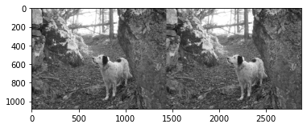
[13]:
gs(np.vstack((gimg, gimg)))
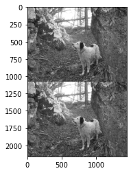
Exercise - Passport#
Try to replicate somehow the head
[ ]:
# write here
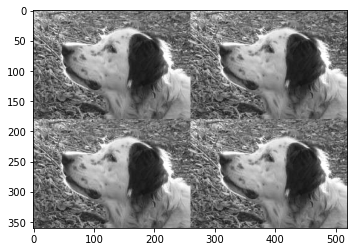
Show solution
[ ]:
head = gimg[470:650,600:860]
col = np.vstack((head, head))
gs(np.hstack((col, col)))
flip#
A handy method for mirroring is flip:
[15]:
gs(np.flip(gimg, axis=1))
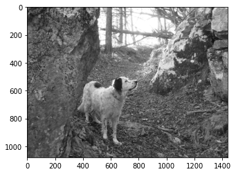
Exercise - Hall of mirrors#
Try to replicate somehow the head, pointing it in different directions as in the example
[ ]:
# write here
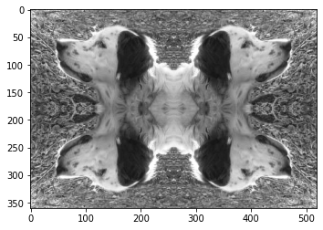
Show solution
[ ]:
head = gimg[470:650,600:860]
col1 = np.vstack((head, np.flip(head, axis=0)))
gs(col1)
col2 = np.flip(col1, axis=0)
gs(np.hstack((col1,np.flip(col2))))
Exercise - The nose from above#
Do some googling and find an appropriate method for obtaining this:
[ ]:
# write here
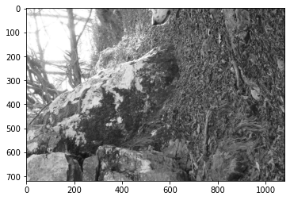
Show solution
[ ]:
gs(np.rot90(gimg[:,:gimg.shape[1]//2]))
Writing arrays#
We can write into an array using square brackets:
[18]:
arr = np.array([5,9,4,8,6])
[19]:
arr[0] = 7
[20]:
arr
[20]:
array([7, 9, 4, 8, 6])
So far, nothing special. Let’s try to make a slice:
[21]:
#0 1 2 3 4
arr1 = np.array([5,9,4,8,6])
arr2 = arr1[1:3]
arr2
[21]:
array([9, 4])
[22]:
arr2[0] = 7
[23]:
arr2
[23]:
array([7, 4])
[24]:
arr1 # the original was modified !!!
[24]:
array([5, 7, 4, 8, 6])
WARNING: SLICE CELLS IN NUMPY ARE POINTERS TO ORIGINAL CELLS!
To prevent problems, you can create a deep copy by using the copy method:
[25]:
#0 1 2 3 4
arr1 = np.array([5,9,4,8,6])
arr2 = arr1[1:3].copy()
arr2
[25]:
array([9, 4])
[26]:
arr2[0] = 7
[27]:
arr2
[27]:
array([7, 4])
[28]:
arr1 # remained the same
[28]:
array([5, 9, 4, 8, 6])
Writing into images#
Let’s go back to images. First note that gimg was generated by calling pt.imshow, which set it as READ-ONLY:
gimg[0,0] = 255 # NOT POSSIBLE WITH LOADED IMAGES!
---------------------------------------------------------------------------
ValueError Traceback (most recent call last)
<ipython-input-186-7d21dd84cac2> in <module>()
----> 1 img[0,0,0] = 4 # NOT POSSIBLE!
ValueError: assignment destination is read-only
If we want something we can write into, we need to perform a deep copy:
[29]:
mimg = gimg.copy() # *DEEP* COPY
mimg[0,0] = 255 # the copy is writable
mimg[0,0]
[29]:
255
If we want to set an entire slice to a constant value, we can write like this:
[30]:
mimg[:, 300:400] = 255
[31]:
gs(mimg)
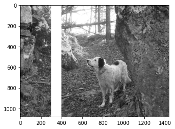
Exercise - Stripes#
Write a program that given top-left coordinates tl and bottom-right coordinates br creates a NEW image nimg with lines drawn like in the example:
use a width of 5 pixels
[ ]:
tl = (450,600)
br = (650,830)
# write here
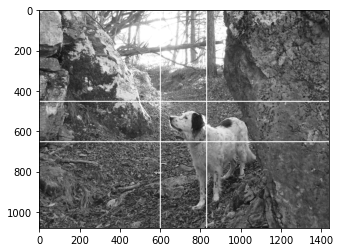
Show solution
[ ]:
tl = (450,600)
br = (650,830)
nimg = gimg.copy() # *DEEP* COPY
nimg[tl[0]:tl[0]+5, :] = 255
nimg[br[0]:br[0]+5, :] = 255
nimg[:, tl[1]:tl[1]+5] = 255
nimg[:, br[1]:br[1]+5] = 255
gs(nimg)
[33]:
gs(gimg) # original must NOT change!

In a dark integer night#
Let’s say we want to darken the scene. One simple approach would be to divide all the numbers by two:
[34]:
gs(gimg // 2)
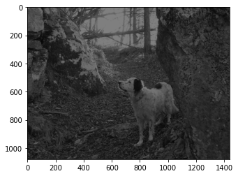
[35]:
gimg // 2
[35]:
array([[104, 104, 105, ..., 58, 59, 58],
[107, 107, 107, ..., 56, 58, 58],
[108, 108, 108, ..., 52, 55, 57],
...,
[ 18, 16, 15, ..., 36, 33, 32],
[ 21, 18, 15, ..., 35, 32, 30],
[ 18, 15, 12, ..., 34, 31, 30]], dtype=uint8)
If we divide by floats we get an array of floats:
[36]:
gimg / 3.14
[36]:
array([[66.56050955, 66.56050955, 66.87898089, ..., 37.2611465 ,
37.57961783, 37.2611465 ],
[68.15286624, 68.15286624, 68.47133758, ..., 35.66878981,
36.94267516, 37.2611465 ],
[69.10828025, 69.10828025, 69.10828025, ..., 33.43949045,
35.03184713, 36.30573248],
...,
[11.46496815, 10.50955414, 9.55414013, ..., 22.92993631,
21.33757962, 20.38216561],
[13.37579618, 11.46496815, 9.87261146, ..., 22.29299363,
20.70063694, 19.42675159],
[11.78343949, 9.87261146, 7.6433121 , ..., 21.65605096,
20.06369427, 19.10828025]])
To go back to unsigned bytes, you can use astype:
[37]:
(gimg / 3.0).astype(np.uint8)
[37]:
array([[69, 69, 70, ..., 39, 39, 39],
[71, 71, 71, ..., 37, 38, 39],
[72, 72, 72, ..., 35, 36, 38],
...,
[12, 11, 10, ..., 24, 22, 21],
[14, 12, 10, ..., 23, 21, 20],
[12, 10, 8, ..., 22, 21, 20]], dtype=uint8)
We used division because it guarantees we will never go below zero, which is important when working with unsigned bytes as we’re doing here. Let’s see what happens when we violate the datatype bounds.
The Integer Shining#
Intuitevely, if we want more light we can try increasing the matrices values but something terrible hides in the shadows….
[38]:
gs(gimg + 30) # mmm something looks wrong ...
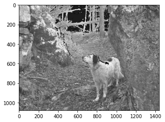
[39]:
gs(gimg + 100) # even worse!
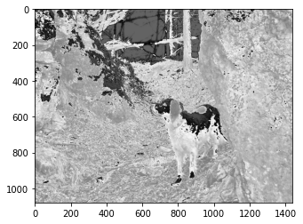
Something really bad happened:
[40]:
gimg + 100
[40]:
array([[ 53, 53, 54, ..., 217, 218, 217],
[ 58, 58, 59, ..., 212, 216, 217],
[ 61, 61, 61, ..., 205, 210, 214],
...,
[136, 133, 130, ..., 172, 167, 164],
[142, 136, 131, ..., 170, 165, 161],
[137, 131, 124, ..., 168, 163, 160]], dtype=uint8)
Why do we get values less than < 100 ??
This is not so weird, technically it’s called integer overflow and is the way CPU works with byte sized integers, so most programming languages actually behave like this. In regular Python you don’t notice it because standard Python allows for arbitrary sized integers, but that comes at a big performance cost that Numpy cannot afford, so in a sense we can say Numpy is ‘closer to the metal’ of the CPU.
Let’s see a simpler example:
[41]:
arr = np.zeros(3, dtype=np.uint8) # unsigned 8 bit byte, values from 0 to 255 included
[42]:
arr
[42]:
array([0, 0, 0], dtype=uint8)
[43]:
arr[0] = 255
[44]:
arr
[44]:
array([255, 0, 0], dtype=uint8)
[45]:
arr[0] += 1 # cycles back to zero
[46]:
arr
[46]:
array([0, 0, 0], dtype=uint8)
[47]:
arr[0] -= 1 # cycles forward to 255
[48]:
arr
[48]:
array([255, 0, 0], dtype=uint8)
Going back to the image, how could we prevent exceeding the limit of 255?
np.minimum compares arrays cell by cell:
[49]:
np.minimum(np.array([5,7,2]), np.array([9,4,8]))
[49]:
array([5, 4, 2])
As well as matrices:
[50]:
m1 = np.array([[5,7,2],
[8,3,1]])
m2 = np.array([[9,4,8],
[6,0,3]])
np.minimum(m1, m2)
[50]:
array([[5, 4, 2],
[6, 0, 1]])
If you pass a constant, it will automatically compare all matrix cells against that constant:
[51]:
np.minimum(m1, 2)
[51]:
array([[2, 2, 2],
[2, 2, 1]])
Exercise - Be bright#
Now try writing some code which enhances scene luminosity by adding light=125 without distortions (you may still see some pixellation due to the fact we have taken just one color channel from the original image)
DO NOT exceed 255 value for cells - if you see dark spots in your image where before there was white (i.e. background sky), it means color cycled back to small values!
DO NOT write stuff like
gimg + light, this would surely exceed the 255 bound !!MUST have unsigned bytes as cells type
HINT 1: if direct sum is not the way, which safe operations are there which surely won’t provoke any overflow?
HINT 2: you will need more than one step to solve the exercise
[ ]:
light=125
# write here
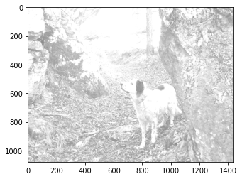
Show solution
[ ]:
light=125
gs(gimg + np.minimum(255 - gimg, light))
RGB - Get colorful#
Let’s get a third dimension for representing colors. Our new third dimension will have three planes of integers, in this order:
0: Red
1: Green
2: Blue
[53]:
plt.imshow(img)
[53]:
<matplotlib.image.AxesImage at 0x7ff584617990>

[54]:
type(img)
[54]:
numpy.ndarray
[55]:
img.shape
[55]:
(1080, 1440, 3)
Each pixel is represented by three integer values:
[56]:
print(img)
[[[209 223 236]
[209 223 236]
[210 224 237]
...
[117 132 139]
[118 132 141]
[117 131 140]]
[[214 228 241]
[214 228 241]
[215 229 242]
...
[112 127 134]
[116 131 138]
[117 131 140]]
[[217 229 243]
[217 229 243]
[217 229 243]
...
[105 120 127]
[110 125 132]
[114 129 136]]
...
[[ 36 28 49]
[ 33 25 46]
[ 30 22 43]
...
[ 72 78 90]
[ 67 73 87]
[ 64 70 84]]
[[ 42 34 55]
[ 36 28 49]
[ 31 23 44]
...
[ 70 76 88]
[ 65 71 85]
[ 61 67 81]]
[[ 37 29 50]
[ 31 23 44]
[ 24 16 37]
...
[ 68 74 86]
[ 63 69 83]
[ 60 66 80]]]
Given a pixel coordinates, like 0,0, we can extract the color with a third coordinate like this:
[57]:
img[0,0,0] # red
[57]:
209
[58]:
img[0,0,1] # green
[58]:
223
[59]:
img[0,0,2] # blue
[59]:
236
[60]:
img[0,0] # result is an array with three RGB colors
[60]:
array([209, 223, 236], dtype=uint8)
Exercise - Focus - top left#
[61]:
plt.imshow(img[:100,:100,:])
[61]:
<matplotlib.image.AxesImage at 0x7ff5845b1dd0>
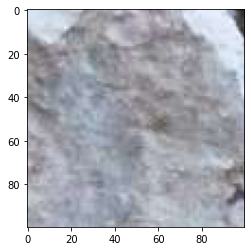
Exercise - Focus - bottom - left#
[ ]:
# write here
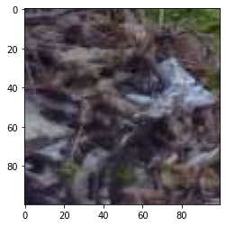
Show solution
[ ]:
plt.imshow(img[-100:,:100,:])
Exercise - Focus - bottom - right#
[ ]:
# write here
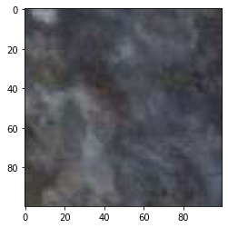
Show solution
[ ]:
plt.imshow(img[-100:,-100:,:])
Exercise - Focus - top - right#
[ ]:
# write here
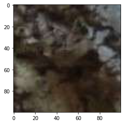
Show solution
[ ]:
plt.imshow(img[:100,-100:,:])
Exercise - Look the other way#
[ ]:
# write here
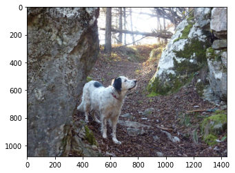
Show solution
[ ]:
plt.imshow(np.fliplr(img))
Exercise - Upside down world#
[ ]:
# write here
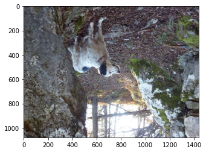
Show solution
[ ]:
plt.imshow(np.fliplr(np.flipud(img)))
Exercise - Shrinking Walls - X#
[ ]:
# write here
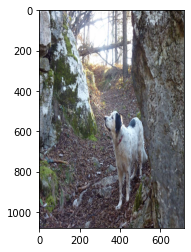
Show solution
[ ]:
plt.imshow(img[:,::2,:])
Exercise - Shrinking Walls - Y#
[ ]:
# write here
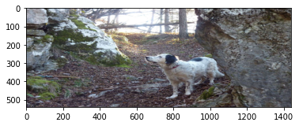
Show solution
[ ]:
plt.imshow(img[::2,:,:])
Exercise - Shrinking World#
[ ]:
# write here
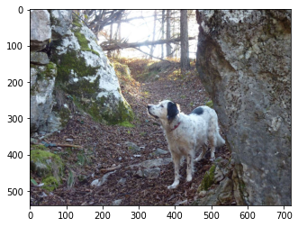
Show solution
[ ]:
plt.imshow(img[::2,::2,:])
Exercise - Pixellate#
[ ]:
# write here
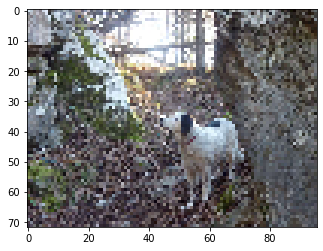
Show solution
[ ]:
plt.imshow(img[::15,::15,:])
Exercise - Feeling Red#
Create a NEW image where you only see red
[ ]:
# write here
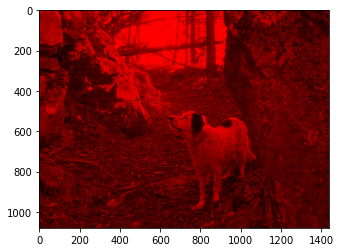
Show solution
[ ]:
mimg = img.copy()
mimg[:,:,2] = 0
mimg[:,:,1] = 0
plt.imshow(mimg)
Exercise - Feeling Green#
Create a NEW image where you only see green
[ ]:
# write here
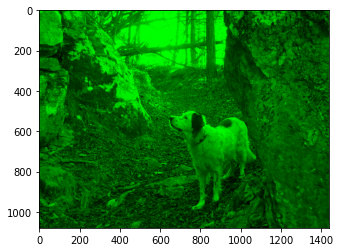
Show solution
[ ]:
mimg = img.copy()
mimg[:,:,0] = 0
mimg[:,:,2] = 0
plt.imshow(mimg)
Exercise - Feeling Blue#
Create a NEW image where you only see blue
[ ]:
# write here
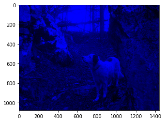
Show solution
[ ]:
mimg = img.copy()
mimg[:,:,0] = 0
mimg[:,:,1] = 0
plt.imshow(mimg)
Exercise - No Red#
Create a NEW image without red
[ ]:
# write here
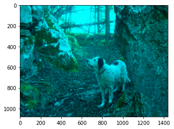
Show solution
[ ]:
mimg = img.copy()
mimg[:,:,0] = 0
plt.imshow(mimg)
Exercise - No Green#
Create a NEW image without green
[ ]:
# write here
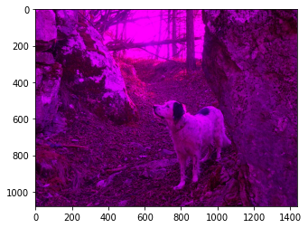
Show solution
[ ]:
mimg = img.copy()
mimg[:,:,1] = 0
plt.imshow(mimg)
Exercise - No Blue#
Create a NEW image without blue
[ ]:
# write here
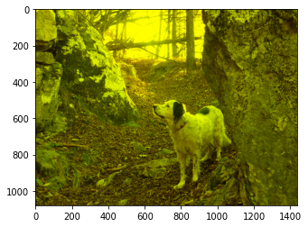
Show solution
[ ]:
mimg = img.copy()
mimg[:,:,2] = 0
plt.imshow(mimg)
Exercise - Feeling Gray again#
Given an RGB image, set all the values equal to red channel
[ ]:
# write here
Show solution
[ ]:
mimg = img.copy()
mimg[:,:,1] = mimg[:,:,0]
mimg[:,:,2] = mimg[:,:,0]
plt.imshow(mimg)
print(mimg)
Exercise - Beyond the limit#
… weird things happen:
[78]:
plt.imshow(img + 10)
[78]:
<matplotlib.image.AxesImage at 0x7ff57ec72b50>
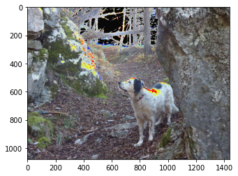
[79]:
mimg = img.copy()
mimg[0,0,0] = 255 # limit !!
mimg[0,0,0]
[79]:
255
[80]:
mimg[0,0,0] += 1 # integer overflow, cycles back - note it does not happen in regular Python !
[81]:
mimg[0,0,0]
[81]:
0
Note this is not so weird, technically this is called overflow and us the way CPU works with byte sized integers, so most programming languages actually behave like this.
You can get the same problem when subtracting:
[82]:
mimg[0,0,0] = 0 # limit !!
mimg[0,0,0] -= 1 # integer overflow , cycles forward
mimg[0,0,0]
[82]:
255
[83]:
plt.imshow(img + img)
[83]:
<matplotlib.image.AxesImage at 0x7ff57ebef550>
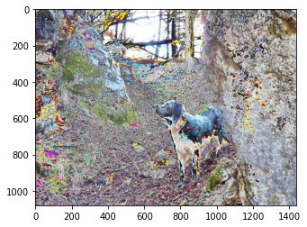
[84]:
plt.imshow(img) # + operator didn't change original image
[84]:
<matplotlib.image.AxesImage at 0x7ff57eb55250>
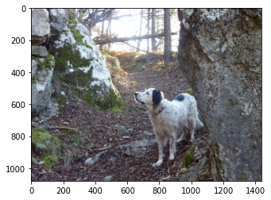
Exercise - Gimme light#
Increment all the RGB values of light, without overflowing
[ ]:
light = 100
# write here
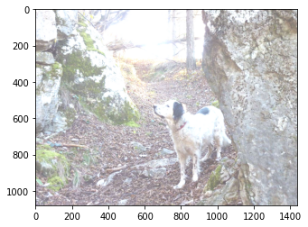
Show solution
[ ]:
light = 100
plt.imshow(img + np.minimum(255 - img, light))
Exercise - When the darkness comes - with a warning#
Decrement all values by light. As a first attempt, a result with a warning might be considered acceptable.
[ ]:
light = -50
# write here

Show solution
[ ]:
light = -50
plt.imshow(img + np.minimum(255 - img, light))
Exercise - When the darkness comes - without a warning#
Decrement all RGB values by light, without overflowing nor warnings
[ ]:
light=50
# write here
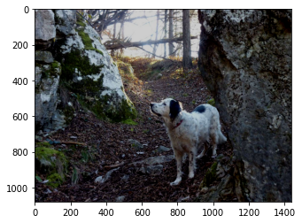
Show solution
[ ]:
light=50
plt.imshow(img - np.minimum(img, light))
Exercise - Fade to black#
Fade the gray picture to black from left to right. Try using np.linspace and np.tile
First create the horiz_fade:
[ ]:
# write here
Show solution
[ ]:
ls = np.linspace(255,0,gimg.shape[1])
horiz_fade = np.tile(ls, (gimg.shape[0],1))
[89]:
gs(horiz_fade)
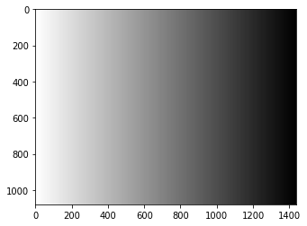
Then apply the fade - notice that by ‘applying’ we mean subtracting the fade (so white in the fade will actually correspond to dark in the picture)
[ ]:
# write here
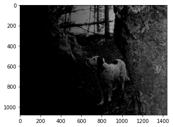
Show solution
[ ]:
gs(gimg - np.minimum(gimg, horiz_fade))
Exercise - vertical fade#
(harder) First create a vertical_fade:
[ ]:
# write here
Show solution
[ ]:
ls = np.linspace(0,255,gimg.shape[0])
vertical_fade = np.repeat(ls, gimg.shape[1]).reshape(gimg.shape[0], gimg.shape[1])
[92]:
gs(vertical_fade)
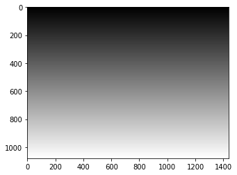
Then apply the fade:
[ ]:
# write here
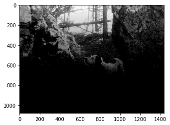
Show solution
[ ]:
gs(gimg - np.minimum(gimg, vertical_fade))
Continue#
Go on with Matplotlib Challenge